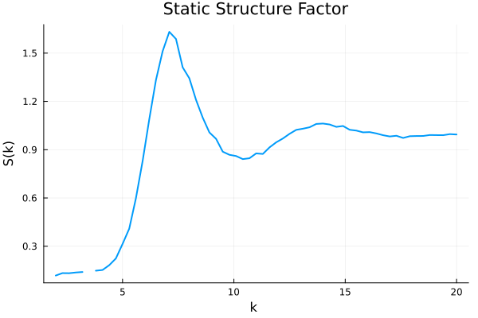

Examples
This page provides examples for various analysis functions available in SimulationAnalysis.jl.
Common Setup
All examples on this page use a sample trajectory file included with the package. The following code loads the simulation data and will be used as a common starting point for the examples below. We also assume that you have Plots.jl installed for the plotting examples.
using SimulationAnalysis
using Plots
# Construct the path to the test trajectory file
filepath = joinpath(dirname(pathof(SimulationAnalysis)), "..", "test", "data", "test_trajectory.h5")
# Load the simulation into a SingleComponentSimulation object
# If you have access to the data in some other format, you need to
# construct a Simulation object manually.
sim = SimulationAnalysis.read_continuously_hard_sphere_simulation(filepath; time_origins=10)
display(sim)Reading data file
This is a SingleComponentSimulation.
It contains the fields:
N: 1000
Ndims: 3
Nt: 430
dt: 0.01
r_array: Array{Float64, 3}
v_array: Array{Float64, 3}
F_array: Array{Float64, 3}
D_array: Vector{Float64}
t_array: Vector{Float64}
box_sizes: Vector{Float64}
dt_array: Vector{Float64}
t1_t2_pair_array: Vector{Matrix{Int64}}
filepath: C:\Users\Ilian\.julia\dev\SimulationAnalysis\src\..\test\data\test_trajectory.h5So as we can see, we have loaded a simulation object of 1000 particles with 430 saved frames, at the time points given by t_array.
Radial Distribution Function (g(r))
The radial distribution function describes the structure of the system.
# Set parameters for g(r) calculation
Nbins = 100
rmax = 5.0
# Calculate the radial distribution function
bin_centres, g_r = SimulationAnalysis.find_radial_distribution_function(sim, Nbins, rmax)
# Plot the g(r)
plot(bin_centres, g_r,
xlabel="r (particle diameters)",
ylabel="g(r)",
title="Radial Distribution Function",
legend=false,
lw=2
)
K-Space Analysis
These functions are used for analyzing the structure and dynamics in reciprocal space.
Constructing K-Space
First, we need to construct the k-space vectors.
# Use only wave vectors with a length between 0 and 10
kbounds = (0.0, 20.0)
# Construct the k-space vectors
kspace = SimulationAnalysis.construct_k_space(sim, kbounds)This is a SimulationAnalysis.KSpace{3, SimulationAnalysis.SingleComponentSimulation, OffsetArrays.OffsetArray{Int64, 3, Array{Int64, 3}}}.
It contains
s: SimulationAnalysis.SingleComponentSimulation
Nk: 2418
k_lengths: Vector{Float64}
k_array: Matrix{Float64}
kfactor: 1
cartesian_to_linear: OffsetArrays.OffsetArray{Int64, 3, Array{Int64, 3}}We can compute the corresponding density modes. These are used to construct scattering functions. They are defines as $\rho(k,t)=\sum_j \exp(i \mathbf{k}\cdot\mathbf{r}_j),$ where the index $j$ runs over all particles.
density_modes = SimulationAnalysis.find_density_modes(sim, kspace; verbose=true)SingleComponentDensityModes with real and imaginary parts of size (430, 2418).Structure Factor (S(k))
The structure factor is the Fourier transform of the radial distribution function and describes the static correlations in the system.
# Calculate the structure factor averaged over a specific shell in kspace
S_k = SimulationAnalysis.find_structure_factor(sim; kmin=2.0, kmax=2.4)
println("Structure factor calculated: ", S_k)Structure factor calculated: 0.12698982578981327If the goal is to compute S(k) at many different points in k, it is more efficient to use the precomputed density modes from above
# Calculate the structure factor for a specific k-range
k_sample_arr = 2:0.3:20
S_k = SimulationAnalysis.find_structure_factor(sim, kspace, density_modes, k_sample_arr; k_binwidth=0.1)
plot(k_sample_arr, S_k,
xlabel="k ",
ylabel="S(k)",
title="Static Structure Factor",
legend=false,
lw=2
)The code above computes the structure factor for each $k_i$ in k_sample_arr, averaged over all k\in (k_i - k_binwidth/2, k_i + k_binwidth/2). It produces the following plot:

The gap in the figure is caused by the absence of any wave vectors that have the length corresponding to that bin.
Intermediate Scattering Function (ISF)
The intermediate scattering function, F(k, t), measures the decay of density correlations at a specific wave vector k over time t.
# Calculate the intermediate scattering function for a specific k-range
isf = SimulationAnalysis.find_intermediate_scattering_function(sim; kmin=7.0, kmax=7.4)
# Plot the ISF
plot(sim.dt_array[2:end], isf[2:end],
xlabel="Time t",
ylabel="F(k, t)",
title="Intermediate Scattering Function",
legend=false,
lw=2,
xaxis=:log
)We could have used the precomputed density modes for performance here, see the API documentation.
Self-Intermediate Scattering Function (Self-ISF)
The self-intermediate scattering function, F_s(k, t), is the single-particle equivalent of the ISF. It measures the correlation of a single particle's position over time.
# Calculate the self-intermediate scattering function
self_isf, self_isf_per_particle = SimulationAnalysis.find_self_intermediate_scattering_function(sim, kspace; kmin=7.0, kmax=7.4)
# Plot the Self-ISF
plot(sim.dt_array[2:end], self_isf[2:end],
xlabel="Time",
ylabel="F_s(k, t)",
title="Self-Intermediate Scattering Function",
legend=false,
lw=2,
xaxis=:log
)Neighbor Lists
Neighbor lists are used to efficiently find particles that are close to each other. These functions return lists of neighbors and are not typically plotted directly.
Absolute Distance Neighbor List
This method finds all particles within a certain absolute distance of each other.
# Find neighbor lists based on a cutoff distance
neighborlists_abs = SimulationAnalysis.find_absolute_distance_neighborlists(sim, 2.0)
println("Absolute distance neighbor lists calculated for ", length(neighborlists_abs), " time steps.")Absolute distance neighbor lists calculated for 430 time steps.Voronoi Neighbor List
This method uses Voronoi tessellation to determine neighbors.
THIS IS CURRENTLY BROKEN IN 3D ON JULIA 1.11 (Quickhull.jl segfaults)
# Find neighbor lists using Voronoi tessellation
neighborlists_voronoi = SimulationAnalysis.find_voronoi_neighborlists(sim)
println("Voronoi neighbor lists calculated for ", length(neighborlists_voronoi), " time steps.")Voronoi neighbor lists calculated for 430 time steps.Bond Correlation Function (Cb)
The bond correlation function is used to study the dynamics of local structure. It requires neighbor lists as input.
# First, calculate neighbor lists
neighborlists = SimulationAnalysis.find_absolute_distance_neighborlists(sim, 2.0)
# Calculate the bond correlation function for each particle
Cb_per_particle = SimulationAnalysis.find_CB(sim, neighborlists, neighborlists)
# average over particles
Cb = sum(Cb_per_particle, dims=2)[:] / size(Cb_per_particle, 2)
# Plot the bond correlation function for a single particle
plot(sim.dt_array[2:end], Cb[2:end],
xlabel="Time",
ylabel="Cb(t)",
title="Bond Correlation Function",
legend=false,
lw=2,
xscale=:log10
)Mean Squared Displacement (MSD)
The mean squared displacement is a measure of the average distance a particle travels over time. By default, the particles are stored as mapped into the main box. Therefore we need to reconstruct the data with the original trajectories.
# Calculate the mean squared displacement
sim_original = SimulationAnalysis.read_continuously_hard_sphere_simulation(filepath;
time_origins=10, original=true)
msd = SimulationAnalysis.find_mean_squared_displacement(sim_original)
# Plot the MSD
plot(sim.dt_array[2:end], msd[2:end],
xlabel="Time",
ylabel="MSD",
title="Mean Squared Displacement",
legend=false,
lw=2,
xscale=:log10,
yscale=:log10,
)
Non-Gaussian parameter ($\alpha_2$)
The non-Gaussian parameter is a measure of the non-Gaussianity in the system. It is defined as $\alpha_2(t) = \frac{d}{d+2}\frac{MQD(t)}{MSD(t)^2}-1$ where $MQD$ is the mean quartic displacement (fourth moment of the displacement distribution) and $d$ is the dimensionality.
a2 = SimulationAnalysis.find_non_gaussian_parameter(sim_original)
# Plot the MSD
plot(sim.dt_array[2:end], a2[2:end],
xlabel="Time",
ylabel="alpha_2(t)",
legend=false,
lw=2,
xscale=:log10,
)